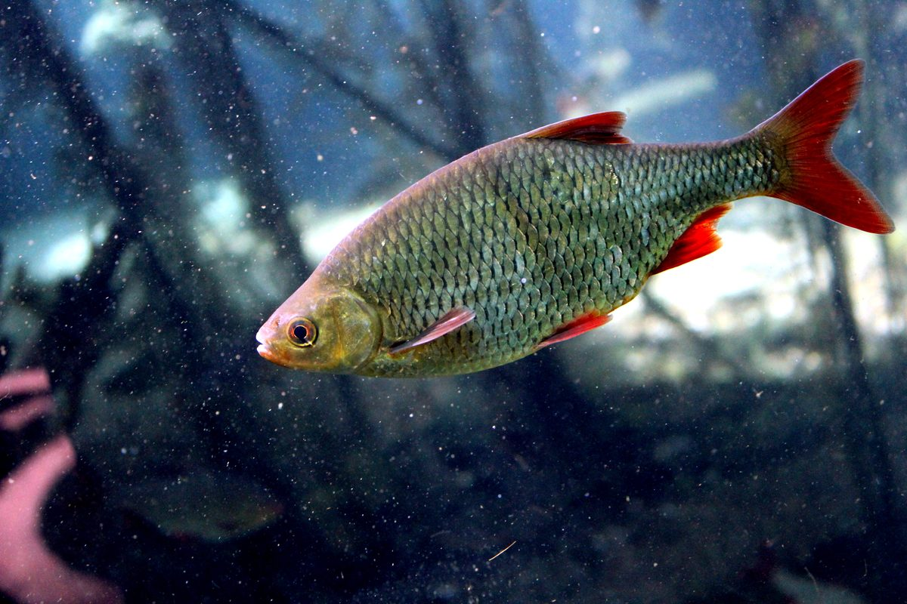

Biologia i rozpoznawanie
Wygląd i rozpoznawanie
Wzdręga (Scardinius erythrophthalmus) ma ciało wysokie, silnie bocznie spłaszczone i wyraźnie wygrzbiecone, pokryte dużymi łuskami o wyraźnym złocistomosiężnym połysku, ciemniejsze na grzbiecie. Najbardziej rzuca się w oczy barwa płetw: brzuszne, odbytowa i dolna część ogonowej są krwistoczerwone, jaskrawsze niż u jakiejkolwiek innej naszej ryby karpiowatej. Otwór gębowy jest wyraźnie skierowany ku górze (górny), co zdradza zwyczaj zbierania pokarmu spod powierzchni wody i znad roślin. Oko ma tęczówkę żółtą lub żółtopomarańczową, bez wyraźnej czerwonej plamy typowej dla płoci. Kluczową cechą oznaczania jest położenie płetwy grzbietowej — u wzdręgi zaczyna się ona wyraźnie za nasadą płetw brzusznych, cofnięta ku tyłowi ciała, a brzuch między płetwami brzusznymi a odbytową tworzy ostry, kilowaty grzebień. Typowe okazy mierzą 15–25 cm, choć na żyznych wodach spotyka się ryby zbliżające się do 35 cm.
Środowisko i występowanie w Polsce
Wzdręga jest w Polsce pospolita i rozpowszechniona na całym niżu, choć rzadziej dominuje liczebnie niż płoć. Wyraźnie preferuje wody stojące i wolno płynące: dobrze zarośnięte jeziora, starorzecza, glinianki, stawy, kanały, zatoki zbiorników zaporowych oraz spokojne, obrośnięte roślinnością odcinki rzek nizinnych. Unika silnego nurtu i wód zimnych, ubogich w roślinność. Najchętniej trzyma się gąszczu roślin zanurzonych i wynurzonych — pól grzybieni, trzcin, pałek, tataraku i łąk podwodnych — gdzie znajduje pokarm i schronienie. Jest rybą typowo przypowierzchniową i strefy przybrzeżnej, rzadziej schodzi na głębsze, otwarte stanowiska. Toleruje wody ciepłe, żyzne, a nawet ubogie w tlen lepiej niż wiele innych karpiowatych, dzięki czemu zasiedla nawet mocno wypłycone, mocno zarośnięte zbiorniki, w których czuje się wyjątkowo dobrze i osiąga wysokie zagęszczenie.
Biologia i tarło
Wzdręga dojrzewa płciowo w wieku dwóch–trzech lat, przy długości kilkunastu centymetrów. Tarło odbywa się późną wiosną i wczesnym latem, zwykle od maja do czerwca, gdy woda ogrzeje się do około 18 stopni — a więc później niż u płoci. Ryby trą się gromadnie w płytkiej, mocno zarośniętej strefie przybrzeżnej, składając kleistą ikrę na roślinach zanurzonych, korzeniach i zatopionych częściach szuwaru. Samica wydaje od kilkunastu do ponad stu tysięcy ziaren ikry, często w kilku porcjach. Wzdręga rośnie wolno i nie osiąga dużych rozmiarów — okazy powyżej 30 cm należą do rzadkości. W naturze bardzo chętnie krzyżuje się z płocią, leszczem i innymi karpiowatymi, a mieszańce te mają cechy pośrednie i bywają wyjątkowo trudne do jednoznacznego oznaczenia. Jako gatunek roślinożerno-wszystkożerny wzdręga stanowi ważne ogniwo bazy pokarmowej drapieżników, zwłaszcza szczupaka i okonia polujących w strefie roślinności.
Żerowanie w sezonach
Wzdręga jest wszystkożerna z silnym skłonieniem ku pokarmowi roślinnemu: zjada glony nitkowate, miękkie części roślin wodnych, nasiona, larwy owadów, owady spadające na powierzchnię, ślimaki i skorupiaki. Górny otwór gębowy predysponuje ją do zbierania pokarmu z powierzchni i z górnej warstwy toni. Szczyt aktywności przypada na ciepłą porę roku — latem, w nagrzanej wodzie, wzdręga żeruje intensywnie tuż pod powierzchnią i przy roślinności, chwytając owady oraz opadające przynęty, często zdradzając się delikatnym plaskaniem i kręgami na wodzie. Wiosną, po ogrzaniu płycizn, wychodzi na obrzeża szuwaru; jesienią, wraz z ochłodzeniem, schodzi głębiej i żeruje ospalej. Zimą jej aktywność wyraźnie spada — wzdręga stoi wtedy w głębszych, spokojnych partiach zbiornika i bierze niechętnie, dlatego pod lodem łowi się ją znacznie rzadziej niż płoć. To ryba par excellence letnia i ciepłolubna.
Przepisy, metody i taktyka
Wymiar, okres ochronny i limit — orientacyjnie
Według ogólnych zasad PZW wzdręga nie ma ustalonego wymiaru ochronnego ani okresu ochronnego, a jej zabieranie mieści się zwykle w wagowym limicie ryb drobnych — orientacyjnie do 5 kg na dobę łącznie z innymi gatunkami nieobjętymi limitami sztukowymi, takimi jak płoć, krąp czy ukleja. Trzeba jednak wyraźnie podkreślić, że są to jedynie zasady ogólne. Poszczególne okręgi PZW, łowiska specjalne i gospodarze wód stosują własne, często surowsze regulaminy, w których limity wagowe, ograniczenia w zabieraniu ryb drobnych czy zasady postępowania z rybami mogą być inne. Na części wód obowiązują dodatkowe restrykcje wprowadzone dla ochrony bazy pokarmowej drapieżników. Przed każdym połowem należy zatem zweryfikować aktualne zezwolenie oraz regulamin właściwego okręgu, a w razie wątpliwości sprawdzić komunikaty na pzw.org.pl i informacje u gospodarza łowiska.
Metody i przynęty
Wzdręga to klasyczna zdobycz spławikowa, a jej przypowierzchniowy tryb życia narzuca lekkie, delikatne zestawy. Sprawdza się bat, tyczka i lekka odległościówka z żyłką główną 0,12–0,14 mm, przyponem 0,08–0,12 mm i haczykiem 14–18. Kluczem jest podanie przynęty wysoko w toni lub tuż pod powierzchnią, dlatego często rezygnuje się z klasycznego rozłożenia obciążenia przy dnie na rzecz zestawu wolno opadającego, z ciężarem skupionym wysoko lub z lekkim spławikiem typu waggler łowiącym na kilkanaście centymetrów głębokości. Doskonale sprawdza się metoda spod powierzchni z pływającym chlebem, pojedynczą pinką czy kawałkiem kukurydzy. Przynęty podstawowe to białe robaki, pinka, kawałki chleba, ciasto, kukurydza, drobne ziarna oraz owady. Przy żerujących z owadów wzdręgach znakomicie bywa muchówka — mała sucha mucha lub delikatna nimfa podana na roślinność. Im cieplejsza woda i wyższe żerowanie, tym lżejszy i płycej ustawiony zestaw.
Taktyka łowienia
Wzdręgę szuka się tam, gdzie jest roślinność: przy krawędziach trzcin, polach grzybieni, w oknach między roślinami, przy zatopionych gałęziach i wzdłuż linii szuwaru. Latem najskuteczniejsze bywa łowienie tuż pod powierzchnią, dosłownie na kilkanaście centymetrów, obserwując kręgi i plaśnięcia zdradzające żerujące ryby. Nęci się delikatnie i wysoko — luzem podawane białe robaki, drobno kruszony chleb czy lekka, wolno tonąca zanęta utrzymują wzdręgi w górnej warstwie wody. Warto donęcać oszczędnie, ale często, drobnymi porcjami, prowokując rybę do żerowania przy powierzchni. Ponieważ wzdręga jest płochliwa i trzyma się blisko brzegu, kluczowe są cisza, ukrycie sylwetki i dłuższe podanie zestawu w bok lub w okno wśród roślin. Brania bywają szybkie i pewne — spławik często znika gwałtownie — ale zacięcie powinno pozostać delikatne, bo ryba ma niewielki, miękki pysk. Przy zaczepistej roślinności potrzebny jest zestaw na tyle mocny, by szybko wyprowadzić rybę z gąszczu.
Wartość kulinarna
Mięso wzdręgi jest białe i smaczne, ale — podobnie jak u płoci — drobnoościste, przez co gatunek ten nie należy do cenionych kulinarnie ryb konsumpcyjnych. Dodatkowo bywa, że mięso ryb z ciepłych, mocno zarośniętych zbiorników ma lekki posmak mułu, co zależy od charakteru wody. Jeśli już przeznacza się wzdręgę do kuchni, najlepiej sprawdzają się większe osobniki, gęsto nacinane przed smażeniem, marynowane w occie (ości miękną) lub przerabiane na kotlety i pulpety rybne, gdzie ości przestają być problemem. Tradycyjnie ryby z tej grupy bywały też wędzone. W praktyce jednak wielu wędkarzy traktuje wzdręgę jako rybę sportową i wypuszcza ją po złowieniu, zwłaszcza że wolno rośnie i pełni istotną rolę w ekosystemie jako pokarm drapieżników. Zabieranie drobnicy tego gatunku rzadko ma uzasadnienie kulinarne czy gospodarcze.
Ciekawostki
Nazwa gatunkowa erythrophthalmus oznacza dosłownie „czerwonooki", choć akurat czerwona tęczówka jest cechą raczej płoci — u wzdręgi najbardziej czerwone są płetwy, i to od nich pochodzi polska nazwa zwyczajowa „krasnopióra". Wzdręga słynie z wyjątkowej skłonności do krzyżowania się z innymi karpiowatymi; mieszańce z płocią bywają tak liczne i tak pośrednie w cechach, że sprawiają kłopot nawet doświadczonym wędkarzom i ichtiologom. Ze względu na roślinożerność wzdręga bywa uznawana za rybę wpływającą na stan roślinności wodnej w niektórych zbiornikach. W wielu krajach, gdzie została introdukowana poza swój naturalny zasięg, traktuje się ją jako gatunek obcy potrafiący silnie rozmnażać się w ciepłych, żyznych wodach. Dla spławikowca pozostaje jednym z symboli leniwego, letniego łowienia w cieniu trzcin, gdy ryba bierze tuż pod czubkiem spławika.
FAQ — najczęstsze pytania
Jak odróżnić wzdręgę od płoci?
Najpewniejsza cecha to położenie płetwy grzbietowej: u wzdręgi zaczyna się ona wyraźnie za nasadą płetw brzusznych (jest cofnięta), a u płoci — dokładnie nad nimi. Wzdręga ma ponadto górny, skierowany ku górze otwór gębowy, żółtawe oko, złocisty połysk łusek i krwistoczerwone, jaskrawe płetwy. Płoć ma pysk końcowy lub lekko skierowany w dół, oko czerwonopomarańczowe (często z czerwoną plamką) i srebrzysty połysk. Uwaga na mieszańce płoci i wzdręgi — mają cechy pośrednie i bywają trudne do jednoznacznego oznaczenia.
Kiedy najlepiej łowić wzdręgę?
Wzdręga to ryba ciepłolubna, więc najlepszy czas na jej łowienie to lato i ciepłe dni późnej wiosny oraz wczesnej jesieni. W nagrzanej wodzie żeruje intensywnie tuż pod powierzchnią i przy roślinności, często zdradzając się kręgami i plaskaniem. Sprawdzają się ciepłe, słoneczne dni oraz pory poranne i wieczorne. Zimą jej aktywność wyraźnie spada i pod lodem łowi się ją rzadko, zdecydowanie trudniej niż płoć.
Na co i gdzie łowić wzdręgę?
Wzdręgę łowi się przede wszystkim metodą spławikową, lekkim zestawem podanym wysoko w toni lub tuż pod powierzchnią, przy roślinności — krawędziach trzcin, polach grzybieni i w oknach wśród roślin. Skuteczne przynęty to białe robaki, pinka, kawałki chleba (także pływającego), ciasto, kukurydza, drobne ziarna oraz owady, a przy żerujących z powierzchni rybach — mała mucha. Nęci się delikatnie i wysoko, drobnymi porcjami, by utrzymać ryby w górnej warstwie wody.
Czy wzdręga ma okres ochronny i wymiar?
Według ogólnych zasad PZW wzdręga nie ma wymiaru ani okresu ochronnego, a jej zabieranie mieści się w wagowym limicie ryb drobnych, orientacyjnie do 5 kg na dobę łącznie z innymi gatunkami nielimitowanymi sztukowo. To jednak tylko zasady ogólne — poszczególne okręgi PZW i łowiska specjalne wprowadzają własne, często surowsze regulaminy. Dlatego przed połowem zawsze trzeba sprawdzić aktualne zezwolenie i regulamin wody, na której się łowi.
Źródła i weryfikacja
Materiał ma charakter przeglądowy i edukacyjny. Wymiary, okresy ochronne i limity podano orientacyjnie wg ogólnych zasad PZW; okręgi stosują własne, surowsze regulacje — przed połowem zweryfikuj aktualne zezwolenie, regulamin właściwego okręgu PZW oraz komunikaty na pzw.org.pl.